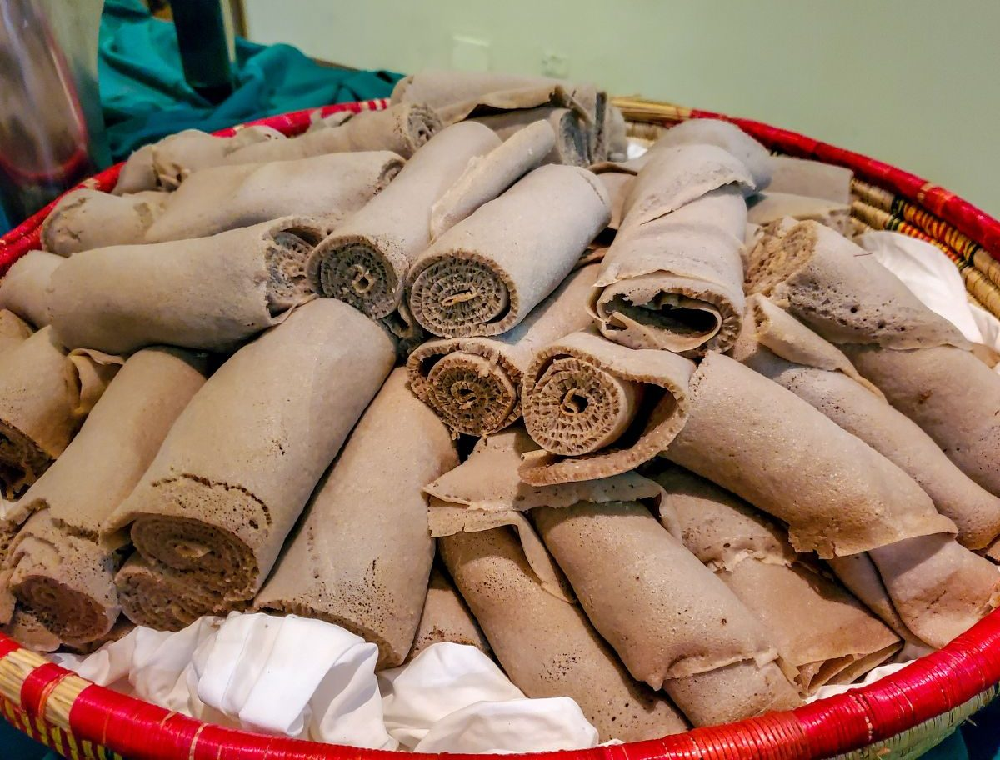

This is the recipe for making injera

Injera is a sourdough flatbread that is a staple in Ethiopian cuisine. It is made from teff flour and has a unique spongy texture.
Here is a simple recipe to make injera:
- Ingredients:
- 2 cups teff flour
- 3 cups water
- 1/2 teaspoon salt
- 1/4 teaspoon baking soda (optional)
- Instructions:
- In a large bowl, mix the teff flour and water until smooth.
- Cover the bowl with a cloth and let it sit at room temperature for 2-3 days to ferment.
- Add salt and baking soda (if using) to the batter and mix well.
- Heat a non-stick skillet or griddle over medium heat.
- Pour a ladleful of batter onto the skillet and spread it into a circle.
- Cook for about 2-3 minutes until bubbles form on the surface.
- Cover with a lid and cook for another minute.
- Remove from the skillet and let it cool on a plate.
- Repeat with the remaining batter.
Back to home